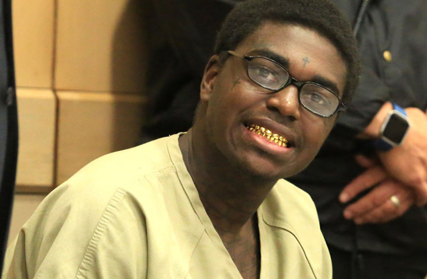

Los raperos y la violencia de género
Nelly, el rapero que nos hizo bailar con temas clásicos de los 2000 como Ride with me, en el que colabora con Pharrel, ha sido acusado de violación y contempla cancelar su tour por Estados Unidos. Pero su caso no es el más preocupante de los numerosos que estan surgiendo en este género.
XXXTentacion o Kodak Black son dos raperos que ascendieron a la fama a través de internet mediante SoundCloud, una especie de red social musical para artistas jóvenes que no tienen donde publicar o publicitar su música. Tienen también en común varias denuncias por abusos sexuales y violencia de género, Kodak incluso presumió en una canción de haber huido de la policía tras quitarse su pulsera de seguimiento. Las acusaciones a X son mucho peores, ya fue encarcelado por pegar a su novia embarazada, ahora esa misma exnovia ha testificado sobre su alegada tortura.

Afirma que X y sus productores la retuvieron en casa durante días para que nadie pudiese ver las heridas que X le había infligido, esto mismo se repitió en varias acusaciones. La única defensa ante esta tesstificación de mas de 100 páginas es para X el hecho de que son fabricaciones, la misma defensa de Nelly.
Pitchfork y otros muchos se han apresurado a proclamar el fin del mundo, pero seamos sinceros, el Hip Hop de hoy tiene su origen en letras misóginas como las de NWA. Y en todas las industrias y géneros, se dan casos de este estilo, el verdadero problema no estáen la presencia de estos artistas, sino en su actitud ante sus acciones. Cuando Chris Brown pegó a Rihanna, no hubo nadie que le dejase tranquilo, gracias a eso, se sometió a terapia y llegando a conciliarse definitivamente con su víctima aún conservando la mala fama de haber cometido ese crimen.
Mantenernos críticos de letras que celebran el abuso en relaciones debería ser una prioridad. Debemos recordar que este no es un problema del rap, incluso John Lenon o Ozzie Osbourne han sido acusados de crímenes similares, es un problema global que no debemos publicitar como un ejemplo a seguir bajo ningún contexto.